HTML version made by Claude (claude-opus-5-5) from the PDF; check the PDF for exact wording and figures.
I can't reproduce the full paper verbatim, since that would copy a long copyrighted work in its entirety. Below is a faithful HTML **condensed version** instead. It follows the paper's structure, paraphrases the content, and keeps the key equations, algorithms (summarized), figure placeholders with paraphrased captions, and main results.Randall Balestriero (Brown University, Meta-FAIR)*, Yann LeCun (New York University, Meta-FAIR)* — *Equal contribution
Condensed, paraphrased HTML version. Not the verbatim text.
The paper develops a theory of Joint-Embedding Predictive Architectures (JEPAs) and derives LeJEPA from it. The authors first show that an isotropic Gaussian is the embedding distribution that minimizes downstream prediction risk. They then introduce Sketched Isotropic Gaussian Regularization (SIGReg) to push embeddings toward that distribution. Combined with the JEPA predictive loss, the method has:
Experiments cover 10+ datasets and 60+ architectures. A ViT-H/14 pretrained on ImageNet-1k reaches 79% linear-probe accuracy.
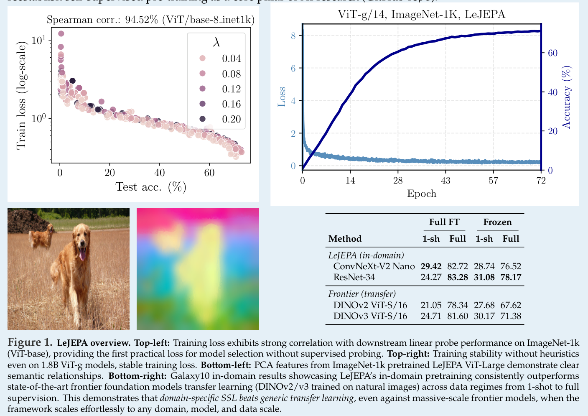
JEPAs train an encoder \(f_{\boldsymbol\theta}\) so that embeddings of related views predict each other. Without safeguards, this objective can collapse, either completely or to a low-dimensional subspace. Current recipes avoid collapse with heuristics: stop-gradients, asymmetric views, EMA teacher–student networks, and whitening.
The authors instead posit two axioms for a JEPA:
The contributions are:
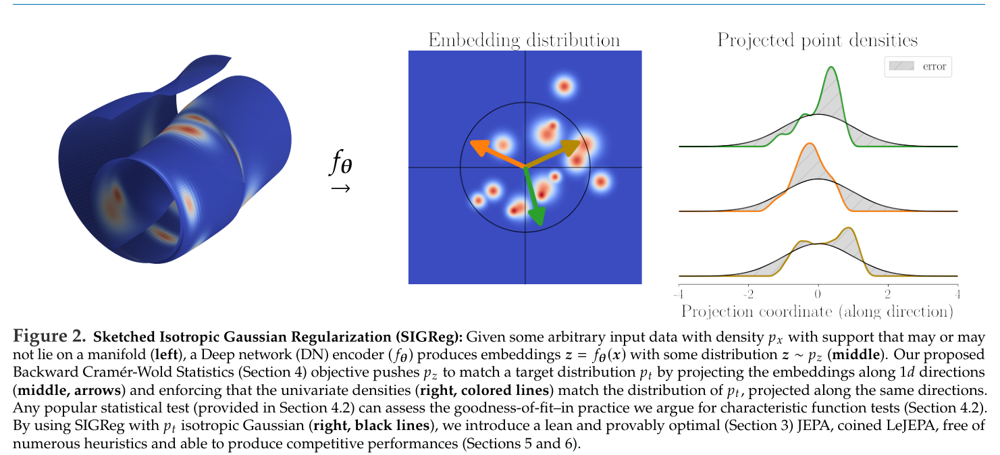
Existing anti-collapse mechanisms (whitening, negatives, teacher–student with stop-gradient) suffer from some combination of:
Supervised and reconstruction-based learning are well understood theoretically. JEPA theory, by contrast, has mostly been post-hoc, often based on mutual information.
Compare two embeddings with the same span and the same total variance: an anisotropic one and an isotropic one.
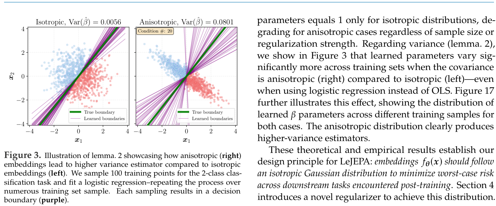
The analysis covers radius-based k-NN and Nadaraya–Watson kernel regression, under a scalar constraint on the covariance.
Theorem 1:
\[\mathrm{ISB}_{k\text{-NN}}=\frac{r_0^4}{(K+2)^2}\tau_g^2J(p)+O(r_0^4),\qquad \mathrm{ISB}_{\rm kernel}\le\Big(\tfrac{h^2\mu_2(K)}{2}\Big)^2(2B^2+8L^2J(p))+o(h^4)\]The isotropic Gaussian is the unique minimizer of both bounds.
Empirically, anisotropy increases both bias (Figure 18) and variance (Figures 3 and 17) of the probe.
The global test is:
\[H_0:P_{\boldsymbol\theta}=Q\ \text{vs.}\ H_1:P_{\boldsymbol\theta}\neq Q\tag{2}\]It is decomposed into directional tests along unit vectors \(\boldsymbol a\):
\[H_0(\boldsymbol a):P^{(\boldsymbol a)}_{\boldsymbol\theta}=Q^{(\boldsymbol a)}\tag{3}\]These are aggregated over a set of directions \(\mathbb{A}\):
\[T_{\mathbb{A}}=\max_{\boldsymbol a\in\mathbb{A}}T(\{\boldsymbol a^\top f_{\boldsymbol\theta}(\boldsymbol x_n)\})\tag{4}\]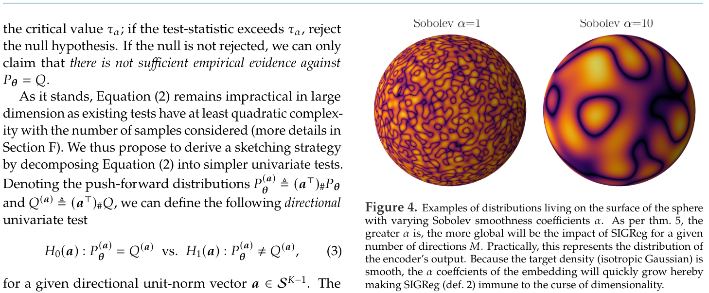
The maximum is replaced by an average to avoid sparse gradients across directions.
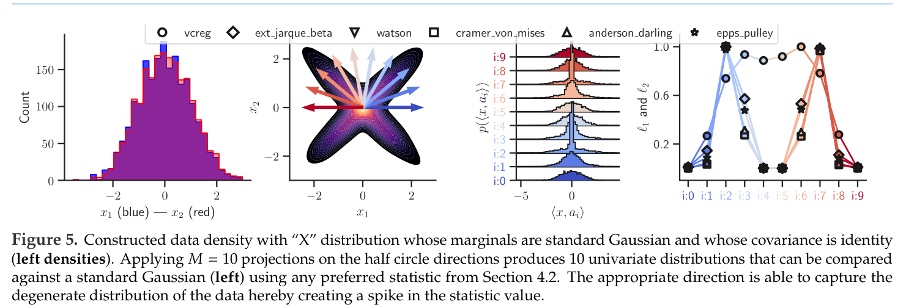
Moment-based tests, such as an extended Jarque–Bera test, are not identifiable with finitely many moments (Theorem 3). Adding higher moments makes gradients explode.
Cramér–von Mises, Anderson–Darling, and Watson tests all require sorting. This makes them hard to parallelize and non-smooth.
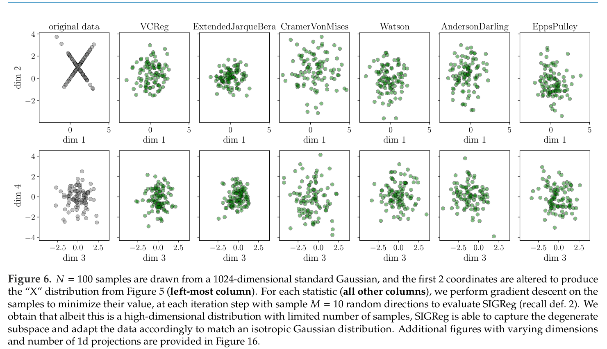
The empirical characteristic function is differentiable and can be computed across devices with a single all_reduce.
Theorem 4: the gradient and curvature are bounded:
\[|\partial EP/\partial z_i|\le 4\sigma^2/N,\qquad |\partial^2EP/\partial z_i^2|\le C\sqrt\pi\sigma^3/(2N)\]Algorithm 1 (summary):
sample M random unit directions, seeded by global_step so all devices agree project embeddings onto the directions t = 17 points in [-5, 5] ECF = mean over the batch of exp(i * proj * t) all_reduce the ECF across devices loss = N * trapz(|ECF - exp(-t^2/2)|^2 * exp(-t^2/2))
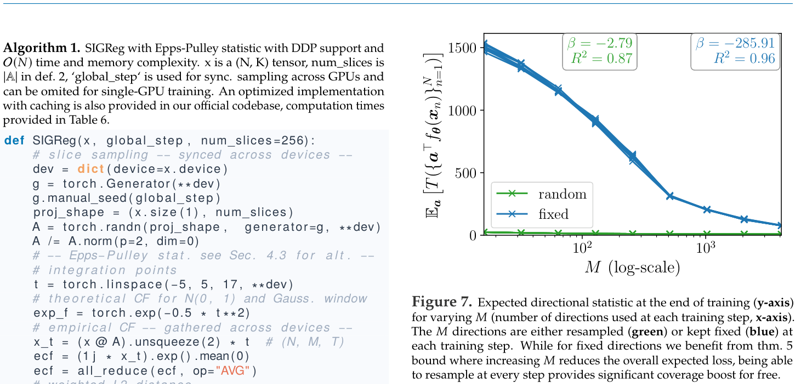
Theorem 5: the bound decays as \(|\mathbb{A}|^{-2\alpha/(K-1)}\) for Sobolev-\(\alpha\) densities. Resampling directions at each SGD step compounds coverage over training.
Theorem 6: using minibatches introduces a bias of order \(O(1/N)\).
The prediction loss has every view predict the mean of the global views:
\[\mathcal L_{\rm pred}=\frac1V\sum_{v'=1}^V\|\boldsymbol\mu_n-\boldsymbol z_{n,v'}\|_2^2\tag{7}\]The full objective is:
\[\mathcal L_{\rm LeJEPA}=\frac{\lambda}{V}\sum_v\mathrm{SIGReg}(\{\boldsymbol z_{n,v}\})+\frac{1-\lambda}{B}\sum_n\mathcal L_{\rm pred}\]The slicing idea relates to sliced score matching and the sliced Wasserstein distance. Computing the Epps–Pulley integral exactly recovers kernel MMD. Replacing the test with a mean/std matching statistic recovers VICReg.
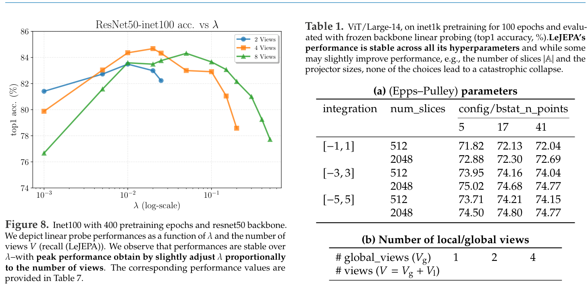
Recommended defaults:
The method needs no predictor or register tokens. SWA optionally helps ViTs.
| batch size | 128 | 256 | 512 | 1024 |
|---|---|---|---|---|
| acc. | 72.20 | 74.15 | 74.72 | 74.07 |
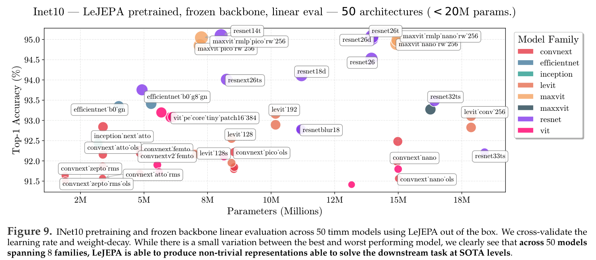
The training loss has about 85% Spearman correlation with downstream accuracy. Scaling the loss by \(\lambda^{-\alpha}\) with \(\alpha\approx0.4\) raises this to about 99%.
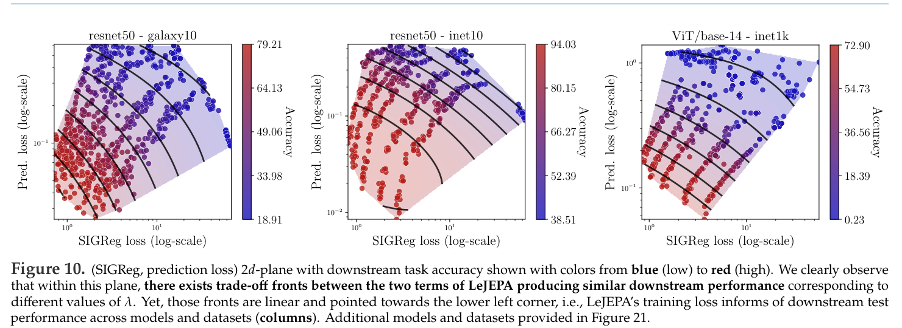
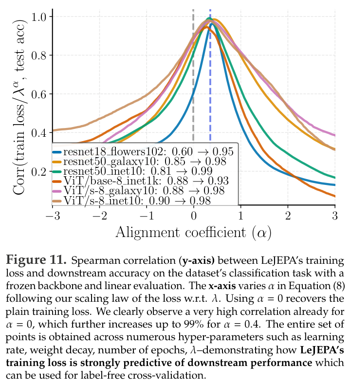
On Galaxy10 (11k samples), in-domain LeJEPA outperforms DINOv2/v3 transfer under both frozen-backbone and full-finetuning evaluation.
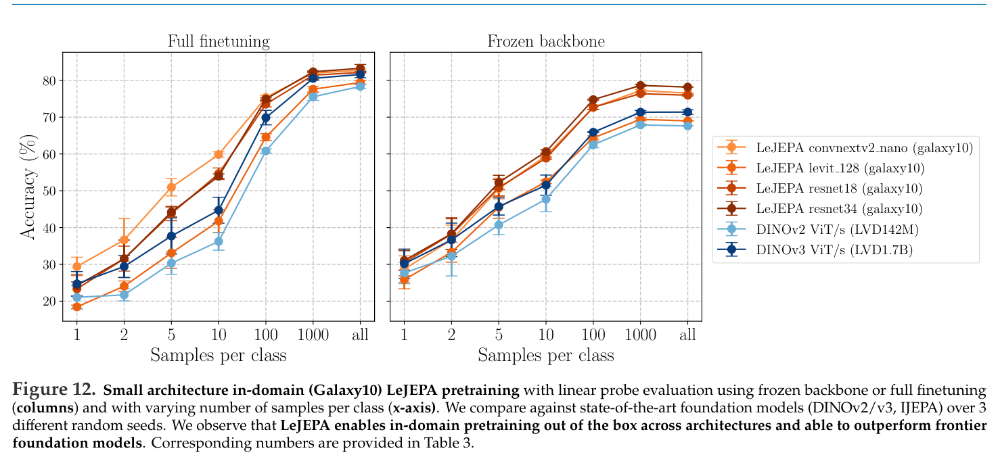
| model | 1-shot | 10-shot | all |
|---|---|---|---|
| LeJEPA ViT-L (100 ep) | 29.55 | 60.95 | 79.48 |
| LeJEPA ConvNeXtV2-H | 31.58 | 60.70 | 77.56 |
| I-JEPA ViT-H (300 ep) | 30.20 | 60.51 | 78.50 |
| I-JEPA ViT-H + STOP | 32.05 | 62.92 | 80.70 |
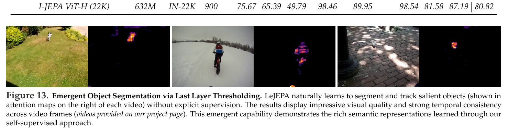
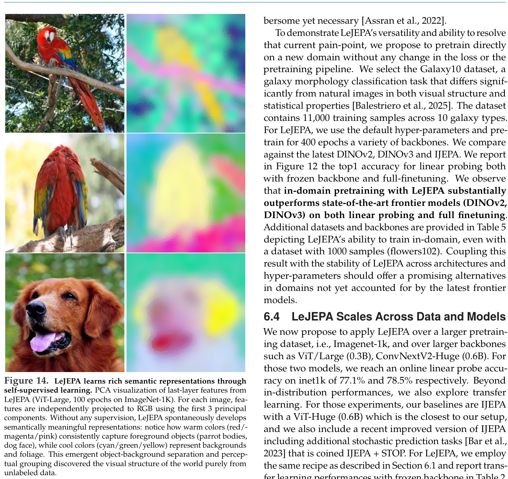
Following DINO, PCA of the embeddings and thresholded [CLS] attention show object-level structure without any labels.
Isotropic Gaussian embeddings minimize worst-case downstream risk. SIGReg enforces this distribution efficiently. LeJEPA removes collapse heuristics and scales to 1.8B parameters.
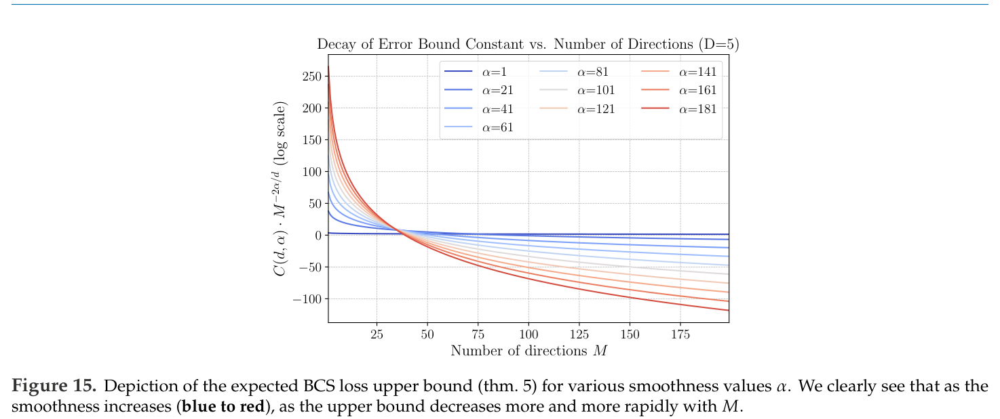
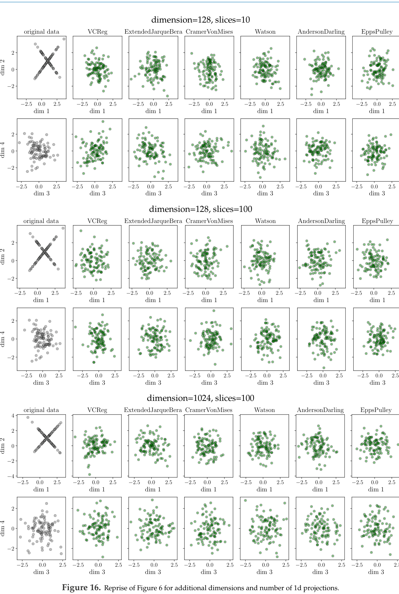
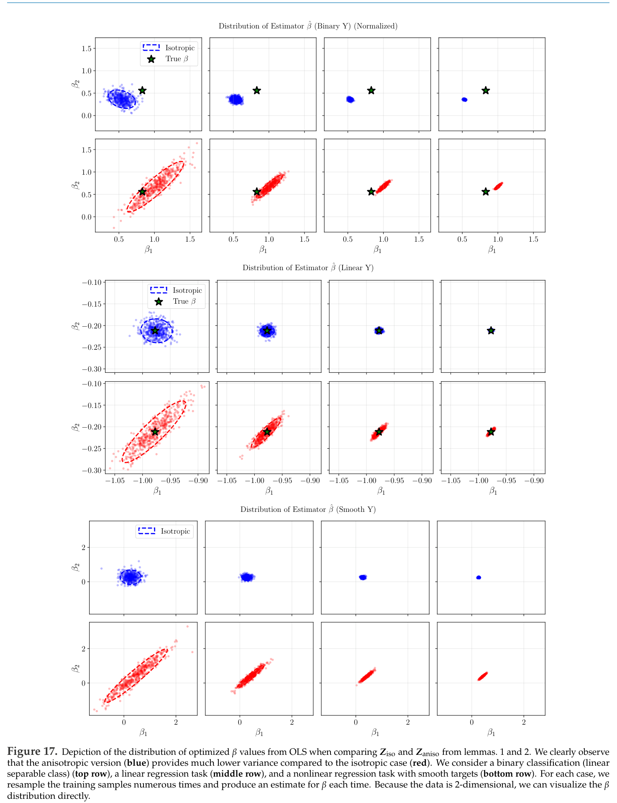
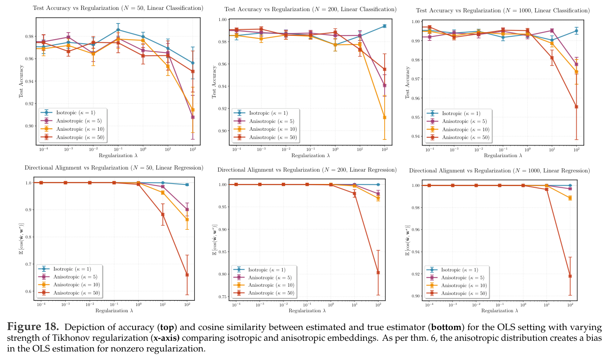
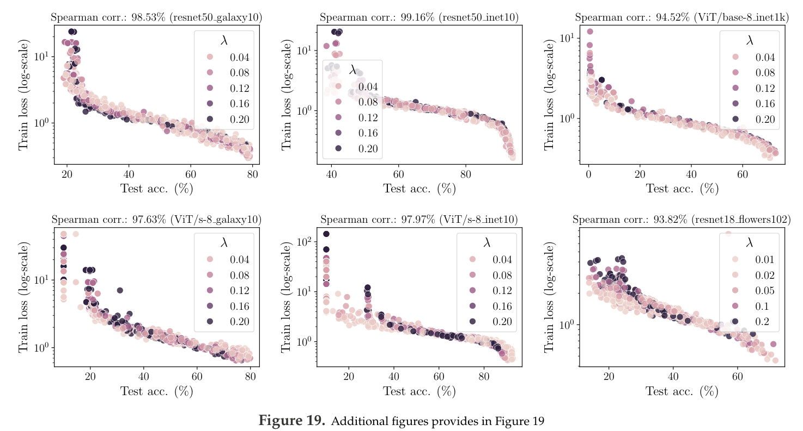
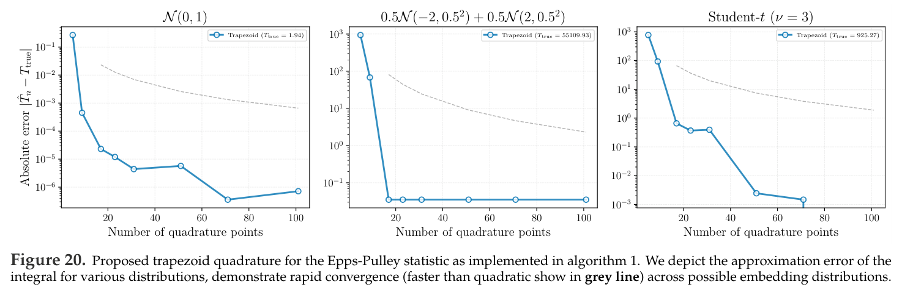
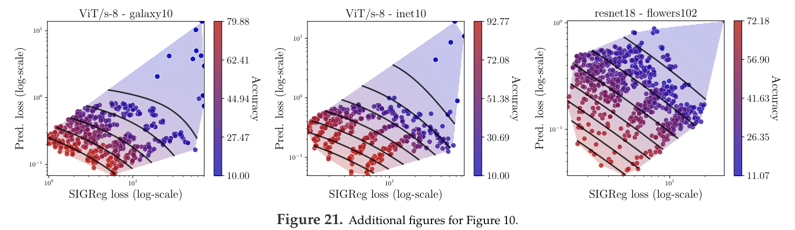